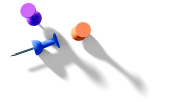
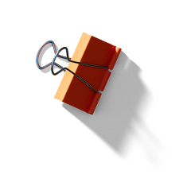
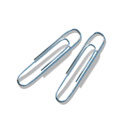
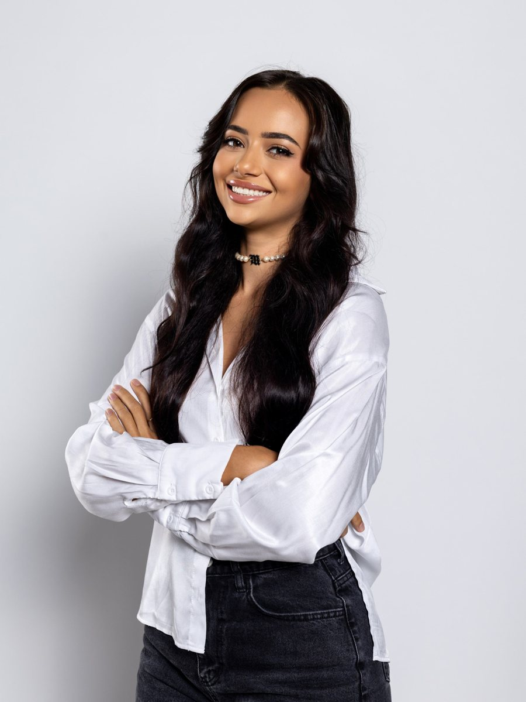
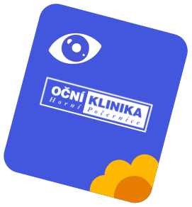
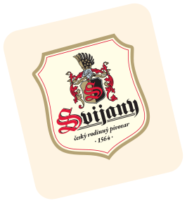
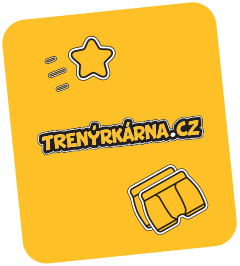

Jmenuji se Anna Brabcová a jsem váš budoucí
Anna Brabcová – Product, UI/UX a Graphic Designer, Praha
Věci na stole můžete posouvat
Design pro mě není jen o tom, jak|věci vypadají. Zajímá mě, jak fungují,|proč fungují a jak je udělat lepšími.
BcA. v Graphic
and Media Design
Studium mi dalo pevné základy vizuální komunikace, typografie a designového myšlení. Naučilo mě nejen tvořit, ale také přemýšlet nad tím, proč věci navrhuji právě tak, jak je navrhuji.



Od vizuální
komunikace
k webdesignu.
Začínala jsem grafikou pro sociální sítě a postupně se dostala k návrhům webových stránek a vizuálních identit.

Creative Director
Vedení kreativních projektů mi dává možnost dívat se na design v širších souvislostech. Od prvotního konceptu přes jednotlivá rozhodnutí až po finální výsledek.
Vlastní projekty.
Vlastní zodpovědnost.
Jako freelancerka pracuji na různorodých projektech, komunikuji přímo s klienty a hledám řešení, která dávají smysl vizuálně i funkčně.
Za každým mým projektem stojí trochu jiný příběh. Pět věcí ale zůstává vždycky stejných.
Vybrané projekty
Na začátku jsem říkala, že jsem váš budoucí designer.
Tak co, přesvědčila
jsem vás?
Ozvěte se mi
© 2026 Anna Brabcová